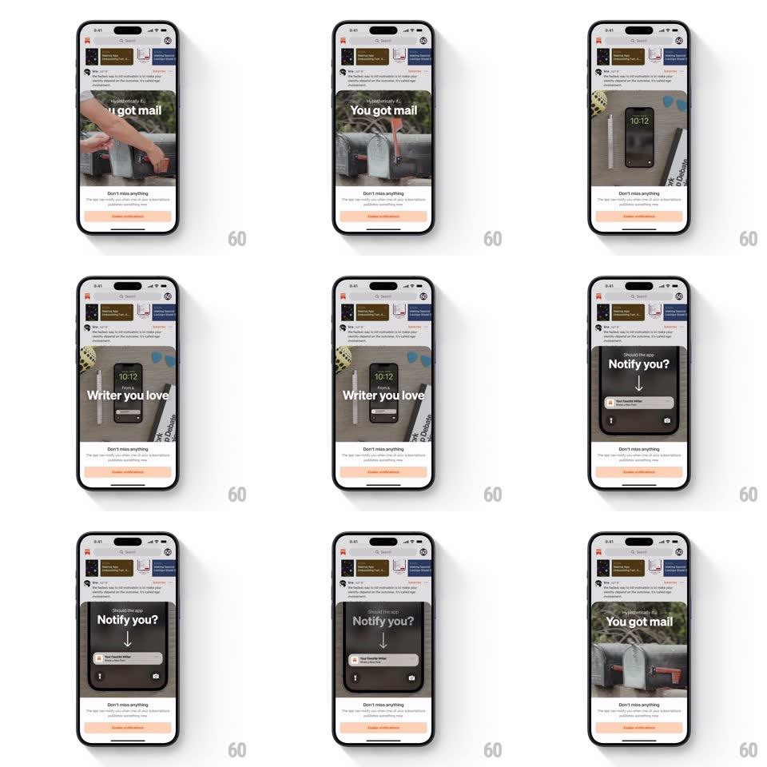

Media
Frame-by-frame

Rebuild this animation 1:1: Substack's notification onboarding sheet - an autoplaying, looping video cycles through scenes (mailbox "You got mail", a writer's desk, a lock-screen "Notify you?" prompt) above the "Don't miss anything" pitch and enable button.

Rebuild this animation 1:1: Substack's notification onboarding sheet - an autoplaying, looping video cycles through scenes (mailbox "You got mail", a writer's desk, a lock-screen "Notify you?" prompt) above the "Don't miss anything" pitch and enable button. ## Integration Integration: stack-agnostic spec - springs given as stiffness/damping, timed motions as duration + curve; map every value to your framework and animation library of choice. ## Scene An onboarding sheet over the Substack feed: a rounded video panel up top, then "Don't miss anything" copy and an orange Enable notifications button. ## Motion spec Pattern: looping multi-scene video in a fixed frame, ~2.5s per scene. - Scenes: the video cuts between staged shots (a hand opening a mailbox, a desk with a phone showing a new post, a lock screen with "Should the app Notify you?" and a notification banner sliding down) - each holds ~2.5s with a quick crossfade (250ms) between them. - Notification beat: inside the lock-screen scene, the banner slides down from the top (spring ~340/22, 400ms) with a subtle phone tilt. - Loop: the sequence restarts seamlessly - the last frame crossfades back to the first. - The sheet's copy and button stay static; the video loops indefinitely while the sheet is open. ## Calibration - The video frame never resizes - all motion is inside it. - Crossfades are short; scenes read as distinct beats, not a blur. ## Reduced motion A static poster frame (the lock-screen scene) replaces the loop. ## Don't miss - Autoplay and loop without controls or chrome. - The in-video notification banner animation is part of the footage's staging - it must read as a real lock screen.